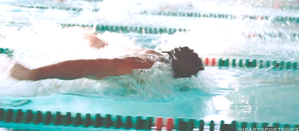

Challenge: Markdown to HTML
| Challenge Parameters |
Challenge Details |
| Repository |
1.markdown-to-html |
| Challenge type |
learning challenge |
| Duration |
1.5 days |
| Deadline |
06/09/2019 17:00 |
| Deployment method |
GitHub pages |
| Group composition |
solo |
Exercise
Note: it is considered a bad practice to add styling inline in your HTML document.
Step 1: Markdown to HTML
- Start by making an index.html file.
- Add the most basic and important HTML tags (with their required properties) to your document:
- Now convert this markdown document (yes the one you are reading) to HTML. Make sure you use the right HTML tag for each part!
Step 2: Adding CSS
- Start by making a style.css file.
- Link the style.css file to your index.html
- Write some styling. Make sure that every element has some styling!
Step 3: Publishing on GitHub pages
- Make sure you add(ed) your exercise folder to the list of links on your published HTML page
Step 4: Audit yourself (bonus)
Use this tool to audit yourself. It will give you information about a lot of things:
- Best practices
- Performance
- SEO guidelines
- ...
Step 5: Challenge yourself and eachother (bonus)
Look up some new/more advanced things you can integrate in your first "website". Ask eachother for a challenge, or come and ask me for one, if you dare! Laughs diabolically
Goals
After this chapter, you should have acquired the following skills/competencies:
- Able to write some simple HTML.
- Able to write some simple CSS.
- Link a CSS file to an HTML file.
- Able to challenge yourself.
